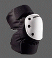
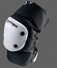

滑板是比较安全的运动。下面是 1997 美国运动受伤人员对照表。可以看到滑板的受伤人数占总人数的比例相对其它运动来说是很低的，居然排在钓鱼之后！
| Activity | Total Participants* |
Total Injured |
Treated And Released (%) |
Hospital Visits Hospitalized (%) |
| Per Participant | ||||
| Ice Hockey | 318,000 | 77,492 | 98.9 0.9 | .244 |
| Baseball | 2,033,000 | 326,569 | 98.2 1.1 | .161 |
| Basketball | 4,527,000 | 644,921 | 99 0.6 | .142 |
| Football | 4,414,000 | 334,420 | 98 1.4 | .076 |
| Soccer | 2,825,000 | 148,913 | 98.3 1.1 | .053 |
| Golf | 971,000 | 39,473 | 95.6 2.3 | .040 |
| Snowboarding | 1,037,000 | 37,638 | 96.7 2.5 | .036 |
| Volleyball | 2,732,000 | 67,340 | 99.4 0.5 | .025 |
| Fishing | 3,812,000 | 72,598 | 98.8 0.8 | .019 |
| Skateboarding | 8,238,000 | 48,186 | 95.2 3.9 | .006 |
这有可能是因为滑板者通常戴上各种防护设备，比如头盔，护膝，护肘，护掌等。通常在各种 U 池上运动的滑板手都需要佩戴所有这些装备。由于这些装备妨碍运动，而且街式滑板速度慢，冲击小，很多街式滑板者不佩戴这些，但是建议至少应该戴上头盔。
 安全的另一方面来源于你自己。不要做超过自己能力的动作，不要在不熟悉的地点作出难度较大的动作。做各种技巧之前先查看地形，看附近是否有危险物品存在，比如碎玻璃，尖锐的栅栏顶部等，不要随身携带尖锐物。